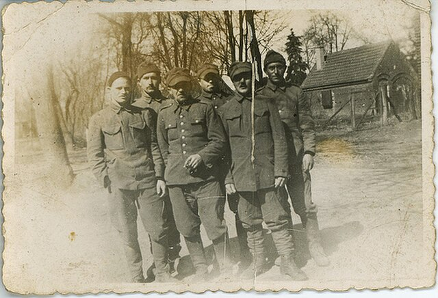

1939 - Invasión de Polonia
Alemania invade Polonia, marcando el inicio de la guerra en Europa.
Alemania invade Polonia, marcando el inicio de la guerra en Europa.
Alemania ocupa Francia y establece el régimen de Vichy.
Japón ataca la base naval estadounidense, llevando a EE.UU. a la guerra.
Los Aliados desembarcan en Normandía, iniciando la liberación de Europa.

Fin de la guerra en Europa (mayo) y en Asia (agosto, tras Hiroshima y Nagasaki).